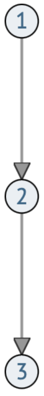

Базы пространственных данных
Основы геоинформатики. Лекция 4
Пространственный объект
- Пространственный объект (ГОСТ Р 52438-2005 2018)
-
Цифровая модель материального или абстрактного объекта реального или виртуального мира с указанием его идентификатора, координатных и атрибутивных данных.

Задача базы пространственных данных — организовать хранение пространственных объектов так чтобы их можно было использовать для решения задач.
База пространственных данных
- База пространственных данных (ГОСТ Р 52438-2005 2018)
-
Совокупность пространственных данных, организованных по определенным правилам, устанавливающим общие принципы описания, хранения и манипулирования данными, предназначенная для удовлетворения информационных потребностей пользователя.
Не рекомендуются к использованию словосочетания: база геоданных, пространственная база данных, база данных ГИС
Модели баз данных
Иерархическая модель — представление базы данных в виде древовидной структуры, состоящей из иерархически соподчиненных объектов.
cложность добавления и удаления элементов;
необходимость любые концепции представлять в виде иерархии.
есть связи \(1:1\) и \(1:N\), но нет связей \(M:N\).

Модели баз данных
Сетевая модель — представление базы данных в виде графовой структуры, состоящей из связанных объектов.
cложность добавления и удаления элементов;
необходимость любые концепции представлять в виде графа.

Модели баз данных
Реляционная модель — представление базы данных в виде совокупности таблиц.
нет необходимости явных связей;
возможность представлять практически любые сущности и их отношения.
более медленная трассировка связей;
избыточность хранения: у каждого объекта одинаковый набор атрибутов

Реляционные БД — терминология
Таблица называется отношением (relation).
Отсюда название модели — реляционная.

Домен — допустимое множество значений.
в широком смысле — тип данных атрибута: текст, целое число, действительное число, дата, геометрия и т.д;
в узком смысле — конкретный перечень или интервал значений;
Реляционная база данных
Ключ отношения — это подмножество атрибутов, имеющее следующие свойства:
уникальность идентификации (значение ключа уникально для каждого кортежа);
ни один из атрибутов ключа нельзя удалить, не нарушив его уникальности;
служит для обеспечения неизбыточности и целостности БД.
И первичный и внешний ключ может состоять из нескольких атрибутов. Например, каждая запись может определяться уникальным сочетанием даты и региона измерения.
Шкалы измерений
Допустимое множество операций над атрибутом зависит не только от его домена, но также от шкалы измерения.
| Шкала | Множество | Отношение больше/меньше |
|---|---|---|
| номинальная | неупорядоченные элементы | нельзя определить |
| порядковая | упорядоченные элементы | да/нет |
| интервальная | с заданным расстоянием | насколько больше/меньше |
| относительная | с заданным расстоянием и абсолютным нулём | во сколько раз больше/меньше |
Шкалы измерений
Допустимое множество операций над атрибутом зависит не только от его домена, но также от шкалы измерения.
| Шкала | Арифметика | Пример |
|---|---|---|
| номинальная | равенство / неравнство | типы почв |
| порядковая | +больше / меньше | классы пожароопасности |
| интервальная | +разность, среднее | температура воздуха |
| относительная | +сумма, отношение | валовой внутренний продукт |
Геореляционная БД
Геореляционной называется реляционная база данных с поддержкой геометрических доменов значений.

В геореляционных БД один кортеж соответствует одному пространственному объекту.
Отношение геометрии и атрибутов
В геореляционных базах данных допустимое множество операций над атрибутом также зависит от того как он получен относительно пространства.
Опора измерений — физический объем, подвергнутый измерению.
Пропорциональны опоре измерений. Суммируются при объединении территорий и делятся при разделении.

Не пропорциональны опоре измерений. Осредняются при объединении территорий и остаются прежними при разделении.

Уровни проектирования

- Концептуальный
-
объекты реальности, их отношения и характеристики; концептуальные модели географической информации; источники данных; пользовательские требования.
- Логический
-
модели данных; cтруктура базы данных, ее разбиение на связанные элементы; атрибуты объектов и их типы данных.
- Физический
-
фактическое представление данных в памяти компьютера; программное и аппаратное обеспечение
Требования к базе данных
База пространственных данных должна быть:
согласованной по времени – данные должны соответствовать определенному времени, быть актуальными;
полной, достаточно подробной для предполагаемых целей анализа и моделирования;
позиционно точной, абсолютно совместимой с другими данными, которые могут добавляться в нее;
достоверной, правильно отражающей характер явлений посредством атрибутов;
легко обновляемой и доступной для выбранной катгории пользователей;
неизбыточной и внутренне непротиворечивой.
Система управления базами данных
- Система управления базами данных (СУБД) (ГОСТ Р ИСО МЭК ТО 10032-2007 2009)
-
Совокупность программных и лингвистических средств общего или специального назначения, обеспечивающих управление созданием и использованием баз данных.
Основные функции СУБД:
управление хранением данных во внешней (дисковой) и оперативной памяти;
выполнение транзакций — последовательностей процедур;
обеспечение надежности — способности восстанавливать состояние БД после аппаратного или программного сбоя
поддержка специального языка управления БД.
Транзакция
- Транзакция
-
Неделимая с точки зрения воздействия на БД последовательность операций манипулирования данными
Примерами транзакций могут служить:
чтение данных;
преобразование отдельных единиц данных;
добавление или удаление кортежей (записей);
изменение логической схемы данных — например, добавление новых атрибутов или отношений.
Атрибутивные операции
Вычисление выполняется для изменения значений одного атрибута. При этом могут использоваться значения других атрибутов или информация о геометрии объектов.
Перевести проценты (0-100) в доли (0-1)

Атрибутивные операции
Интерполяция используется для вычисления промежуточных значений на основе существующих.
Восстановление пропусков в данных, например в ряду речных расходов (гидрограф).

Для выполнения интерполяции объекты (строки) необходимо упорядочить (по времени или другому атрибуту).
Атрибутивные операции
Классификация (реклассификация) используется для разделения значений на группы, определяемые номинальной или порядковой шкалой измерений.
Классификация населенных пунктов по людности на основании численности населения.

Не обязательно классифицировать числовой атрибут, можно также перевести одну классификацию в другую. Например, уменьшить число классов, объединив их в более крупные.
Атрибутивные операции
Агрегирование используется для вычисления сводных значений для групп объектов.
Вычисление средней крутизны склона для водосборов, входящих в бассейны разных рек.

В процессе агрегирования происходит объединение геометрий объектов в мультигеометрии. При этом пересекающиеся в рамках одной мультигеометрии объекты могут быть объединены в один с удалением общих границ,
Фильтрация
Фильтрация используется чтобы оставить в данных только те кортежи, атрибуты которых соответствуют заданным критериям.

Оставить только лесные и степные фитоценозы с количеством осадков выше 500 мм в год
Проекция
Проекция используется чтобы оставить только нужные атрибуты объектов.
Из всех атрибутов оставить только мощность осадков и номер отдела четвертичного периода.
Проекция приводит к изменению структуры таблицы

Соединение
Соединение используется чтобы объединить атрибуты соответствующих объектов из двух таблиц в одну.
К данным по регионам присоединить статистику по промышленному производству.

Для определения соответствия необходимо указать ключевые поля — атрибуты, уникальным образом идентифицирующие объекты в обеих таблицах.
SQL
Structured Query Language (SQL) — язык структурированных запросов. Применяется для создания, модификации и управления данными в реляционной базе данных.
SQL используется для выполнения атрибутивных запросов.
Простейшая форма запроса — проекция:
SELECT <атрибуты> FROM <отношение>
Получить таблицу метеостанций целиком (*):
SELECT * FROM stations
Получить только столбцы идентификатора и имени метеостанции:
SELECT id,name FROM stations
SQL
Для выполнения фильтрации запрос расширяется:
SELECT <атрибуты> FROM <отношение> WHERE <условия>
- Несколько условий часто объединяются
AND(и) иOR(или).
Все метеостанции на Шпицбергене (tid = 3):
SELECT * FROM stations WHERE tid = 3
Все метеостанции на Шпицбергене, либо основанные до 1950 года:
SELECT * FROM stations WHERE tid = 3 OR year < 1950
Идентификатор и имя станций на Шпицбергене, не принадлежащих Норвегии (oid <> 2):
SELECT id,name FROM stations WHERE tid = 3 AND oid <> 2
SQL
Проверить на вхождение в множество можно через
IN()Инвертировать условие можно через
NOT.Проверить пустоту можно через
IS NULL.
Все метеостанции на Шпицбергене или в Гренландии:
SELECT * FROM stations WHERE tid IN (0, 3)
Все метеостанции не на Шпицбергене, и не в Гренландии
SELECT * FROM stations WHERE tid NOT IN (0, 3)
Все метеостанции, у которых не указана территория:
SELECT * FROM stations WHERE tid IS NULL
SQL
Также в SQL распространены операторы:
LIKE— для выполнения неточных сравнений (например, поиска топонимов);BETWEEN— для проверки вхождения в интервал значений;GROUP BY— для выполнения агрегирования по атрибуту;JOIN— для соединения таблиц (существуют разные виды соединений).
При проверки условий используются стандартные символы:
>, >=, =, <, <=<>, !=— неравенство
Словарик
База данных
База пространственных данных
Реляционная модель
Атрибут
Интенсивный / Экстенсивный
Кортеж
Первичный ключ
Домен
СУБД
Транзакция
Запрос
Database
Spatial database
Relational model
Attribute
Intensive / Extensive
Tuple
Primary key
Domain
DBMS
Transaction
Query